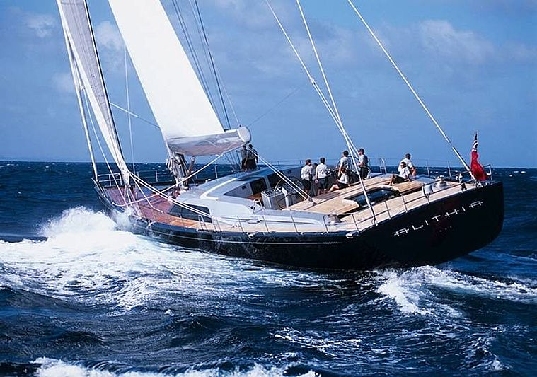
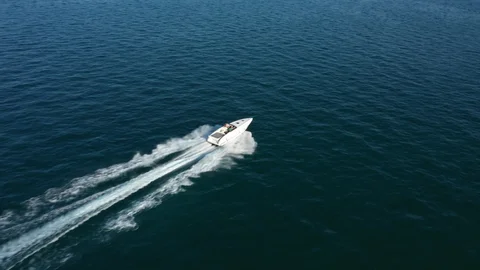
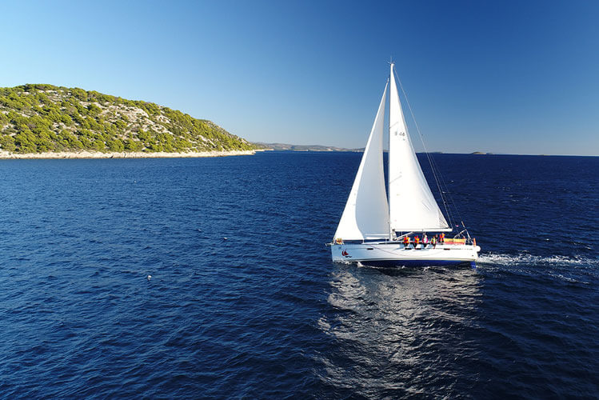

-
Einführung
Mit dem Bootsführerschein selbst das Ruder in der Hand halten und die Weltmeere erobern – dieses Vorhaben ist aller Ehren wert, aber auch mit ein einigen Mühen verbunden. Zwar gibt es in Deutschland die Möglichkeit, ohne Bootsführerschein motorisiert auf Gewässern unterwegs zu sein, wer aber keinen Einschränkungen unterliegen möchte, der sollte die Zeit und das Geld investieren, um einen Bootsführerschein zu machen. Dabei wird zwischen verschiedenen Bootsführerscheinen für Wassersportler unterschieden. Der Sportbootführerschein Binnen (SBF Binnen), Sportbootführerschein See (SBF See), der Sportküstenschifferschein (SKS), der Sportseeschifferschein (SSS) und Sporthochseeschifferschein (SHS) können hierzulande von angehenden Skippern erworben werden. Der wesentliche Unterschied zwischen diesen Bootsführerscheinen liegt in den Gewässern, die befahren werden dürfen sowie der Länge des Bootes. Ausgangspunkt für alle ist der SBF See, auf dem alle weiteren Bootsführerscheine aufbauen. In diesem Artikel erfahrt ihr, worauf es beim Bootsführerschein ankommt und wie ihr den Vorbereitungskurs auch ganz einfach online per App absolvieren könnt.
-

-
Wichtige Informationen zum Bootsführerschein im Überblick:
-

Mindestalter Bootsführerschein
Das Ablegen der Bootsführerscheinprüfung ist in Deutschland ab dem Erreichen des 16. Lebensjahres möglich.
-

Kann man auch ohne Bootsführerschein Boot fahren?
Ja. Durch die 15 PS Regelung ist es in Deutschland möglich, Boote mit einem Motor bis 15 PS führerscheinfrei zu fahren.
-
Wie lange gilt der Bootsführerschein?
Der Bootsführerschein wird auf Lebenszeit ausgestellt und muss nicht erneuert werden.
Gilt der Bootsführerschein auch im Ausland?
Ja, der Sportbootführerschein See wird international anerkannt.